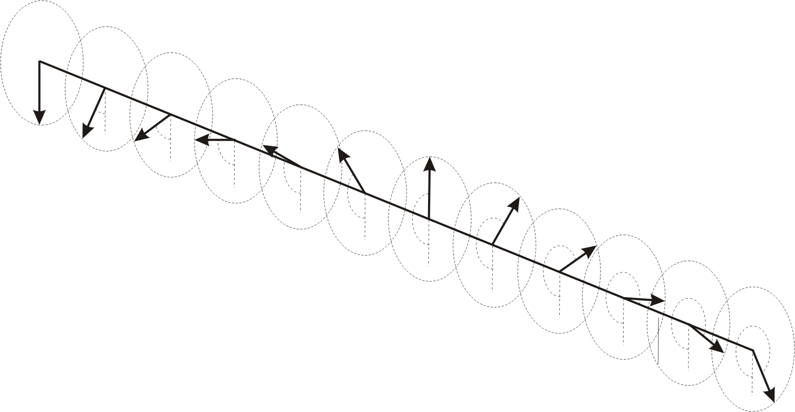

Y13 (2013) — English translation
A soliton is a structurally stable solitary wave propagating in a nonlinear medium. In this problem we will obtain some characteristic properties of these objects.
The solution to the equation of a mathematical pendulum (a load on a weightless rod in a uniform field) is not expressed in elementary functions in the general case. Therefore, small oscillations near the equilibrium position are usually considered. However, there is a special case, namely when at the bottom point the load has a speed $v=\sqrt{4gL}$ with a rod length $L$. In this case, the solution can be represented in the form: \[ \varphi(t)=a \arctan {e^{bt}}, \] where $\varphi$ is the angle between the vertical axis and the rod (at the bottom point $\varphi=\pi$, and the moment $t=0$ corresponds to the passage of the bottom point).
Let us consider a long rigid horizontal string, to which identical spokes arranged vertically are soldered at equal intervals $b$. The mass of the spoke $m$, the distance from the center of mass of the spoke to the string $d$, the moment of inertia relative to the axis passing through the string $I$. When one spoke deviates from its neighbor by an angle $\Delta\varphi$, the string creates a torque $K\Delta\varphi$. If the spokes on one half of the string are turned over a full turn, then a soliton is formed at the interface (Fig. 1). We can assume that the characteristic size of the soliton is $\lambda\gg b$. So consider that the angular coordinate at point $x$ is given by the continuous function $\varphi(x,t)$ (the distant spokes on one half of the string have the coordinate $\varphi(-\infty,t)=2 \pi$, and on the other $\varphi(+\infty,t)=0$).
Rice. 1. Soliton.

The soliton can propagate with a constant speed $v$. In this case, $\varphi(x,t)=f(x\pm vt)$ depending on the direction of propagation.
In the future, you can use $v_{cr}$ in your answers.
Note: For zero potential energy in the gravitational field, take the level of the straight line passing through the centers of mass of the spokes located far enough from the soliton.
The results obtained in the previous part show that the soliton is very similar to a particle. Moreover, we can consider an antisoliton whose spokes are twisted in the other direction. We will say that such a soliton has the opposite charge.
Source: https://pho.rs/p/3976